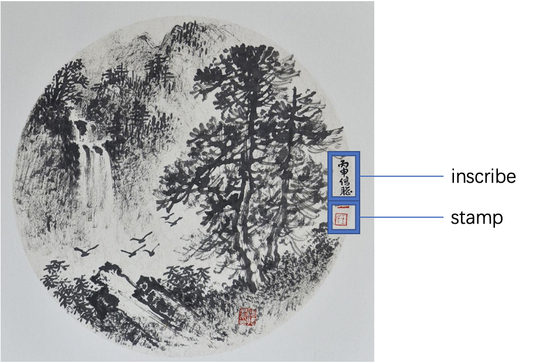

Every traditional Chinese painting has inscribe and red stamp on the side of work
1. To imitate inscribe, we turn "home page" and "classmates" 90 degrees and fixed it on window. So that it will display vertically, just looks like inscribe.
2.To imitate stamps, every link or button you can click on will change its color to stamps' color (orange) when your mouse focus.
3. When your mouse focus on every link or button you can click on, it will change to a butterfly, which is found on aa Chinese Painting.
4. You can notice that for titles and names, we use special dotted borders arounded to imitate Chinese brush trace
5. PREP box, CURRENT box, and COMPLETE box have different background image, so you can know which one is which
6.COMPLETE boxes are on different vertical line compare with the other two
7.For text you need to read, we put white background color but with opacity, so that it will not cover background image but also easy to read.